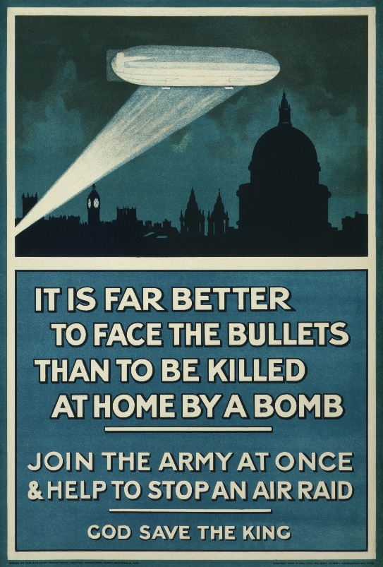
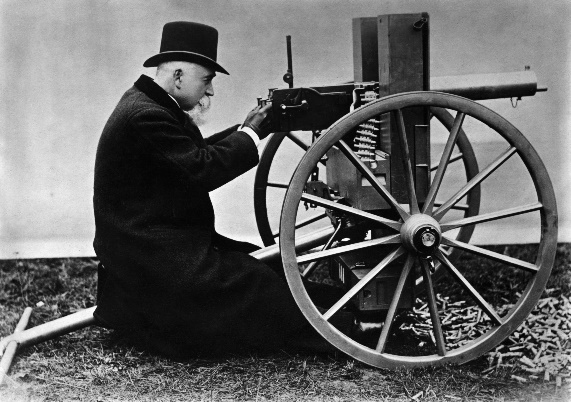

IF YOU CAN SEE THIS TEXT, YOU NEED TO ENABLE JAVASCRIPT FOR MANY FUNCTIONS OF THIS SITE
The 19th century was a time to be alive, similar to what is happening today, technology was rapidly evolving, and due to the discovery of coal and oil new ways of transportation were being made. Cars were getting popular before and during the war, while on the other hand just nine years before the war started the Wright Brothers flew the first plane. The rapid technological advancements would be used in this war with great success. The Germans would use Airships or Blimps to do air raids, while broadly balloons were used for reconnaissance. Airplanes were first used for mi litary recon in 1911. Planes would be integral to the war and saw more active use later in the war compared to airships which were abandoned in 1917 due to most being shot down. While on the ground tanks would make their first military appearance in 1915, where they were used to break trench warfare.
Besides vehicles, technology advanced in weapons drastically, where in the last major European war, the Franco-Prussian War in 1871, standard issue rifles still were single loaded, but by the start of WWI, these rifles would be replaced by bolt action rifles often carrying 5 rounds before reloading, which increased the lethality of weapons. Machine guns evolved during the war and for the first time, both sides would be using these rapid fire guns. A famous poet, Hillaire Belloc, said “Whatever happens, we have got The Maxim gun, and they have not,” with both sides having the advanced guns, World War I became a war of evolving technology to counteract one another. The only other war to have a similar technological race would be the Second World War.